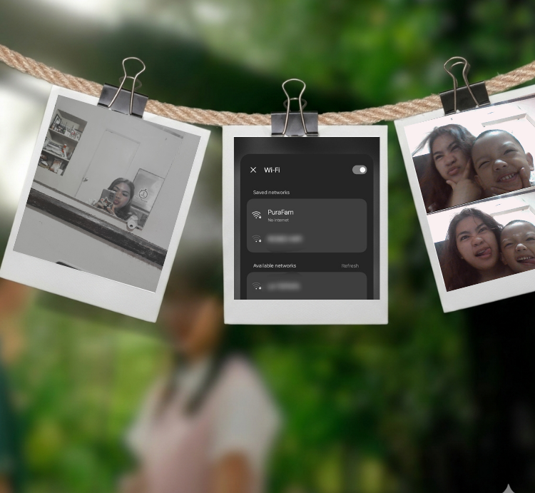

← Back to Portfolio
If Day 1 was all about rest and calmness," Day 2 was a crash course in reality. I expected a continuous happiness just like yesterday, but it turned into a hectic problem against the othe signal.Being in the province has its good side, but the lack of internet access when online classes and activities are piling up is a unique kind of stress. Our internet in our house was lost, another problem is there's not signal for data that could serve as an alternative. To get all work done, I ended up walking all the way to my Lola’s house just to get a connection and get updates about school related stuffs. I was trying to make progress on my website and my ERD model, but even that turned into a battle as the internet cut out again by the afternoon and it basically came by the morning. Honestly, I've been stressed out since the afternoon and the next morning. I kept thinking about my partner waiting for me online, expecting that we’d be collaborating and meeting online on our project. The guilt of being offline for so long when you know people are waiting for you is killing me. I ended up waiting until morning, hoping that connection will be back and it did but i need to cram piled up activities after being away for almost a day. But, if the day would have a good side, it was a time where i could spend time with my relatives. Specifically, I got to bond with little ZK, who made me forget all the problems about deadlines and broken Wi-Fi. "Ate, picture tayo!" "Ate, gayahin mo posing ko." We spent so much time just taking photos, playing and laughing. It was the perfect reminder that even when are feel chaotic and almost all the stuffs is failing you.It wasn't the productive day I planned, but it was a day of family, patience, and enjoyment.